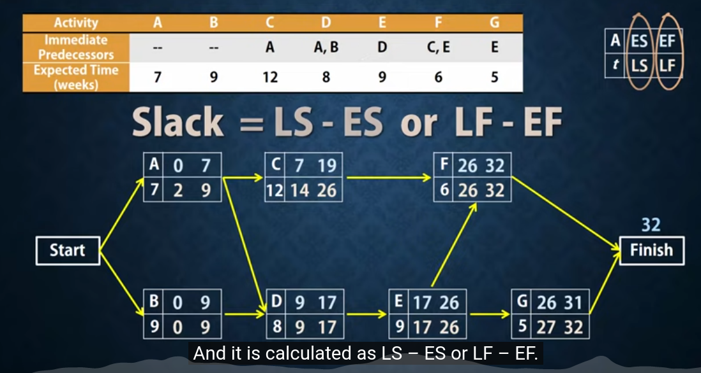

ncc-log-readme
Table of Contents
Still dunno whether writing out this report in Eng or in my Lang., so have a quick log report on wtf I'm doing. ;; Sun 4 Dec 14:29:54 GMT 2022 [✓] Let's have a lines about what done so far as I've experienced some gaps in my mental log on it.
1. 1. Started Level 3 on 04/11/2022 [✓]
Tasks 1.a, 1.b, DL (deadline) by 11/11 done as second try [✓] I could not include the speaker notes [*] As struggling with pp, pptx, I had a org-HTML version posted on GitHub and sent by email but as far as I know, not read, received and probably banned as email is not a mean for submitting task anymore
2. 2. ;; Fri 18 Nov 2022
I did a new version, including the speaker notes, and as an individual file per task (1.a, 1b) but submitted 1.a only, submission link for 1.b was closed, and not conceded new date as it was (unexpectedly) target achieved in the first review by teacher. 1c, 1d deadline by 18/11 23:59 (I did not get it, so started working on them at home after coming from NCC), and tried submitting but failed.
3. 3. ;; Fri 25 Nov 2022
Submitted 1.c, 1.d on 25/11 1c & 1d after merged them and get conceded ad-hoc an extension submitting date from Mr Lawrence, new version of 1b declared redundant as the return evaluation declared it achieved [✓]. Working hmw slides projs entirely in class, submitted 2.1, 2.2, 2.3, (I learn afterwards that 2.3 had DL for 02/12)
4. 4. ;; Fri 02 Dec 2022
2.3 extended version, as declared target not achieved (just before getting out from NCC, though) so I'd got time for submitting 02/12 23:59 [✓] done
4.1. DONE 3.1, 3.2
DL better on 02/12 but by 05/12 3.5 DL 09/12 but better check online on NCC portal, Risk-Management task 3.1 & 3.2 submitted [✓] done
4.2. 3.3, 3.4,
Have also dl by 05/12 \\ submitted task 3.3, 3.4 [✓]
4.2.1. DONE draft notes
- 3.3
Describe how to reduce the risk and follow mitigation, taking into consideration the following: a) missing/unclear requirements [✓] b) skills shortage c) time d) budget e) resource shortage f) decision-making.
- Budget
Regarding interdependence, is not hidden science to infer that budget issues have a direct correlation with the entire performance of the project, its schedule and the quality of deliveries. I have found specialists mention as the top-frequent-ranked two moments in the process of getting into cost overrun issues, at starting, which they call tight-fitting budget planning and in execution which is usually a consequence of inaccuracy in estimations but since the likelihood of getting into cost issues is around 70% in the software industry, this mishap should make it get removed from the list of unpredictable facts. relocate | transfer
overseen constraints | restrictions
Time is a pillar in the project management.
Risks related to decision-making is an entire science. Some research report that propensity to take risks or avoid and spent time in gaining information and working in group are connected inversely.~ - DONE 3.4
For each of the identified risk types, propose potential mitigations, taking into consideration key elements of the following: a) Scrum b) Kanban c) Waterfall d) Agile.
4.3. DONE 3.5
dl 09/12, R.M.,The Critical Path, task 5 [✓] submitted Explain what is meant by a project’s critical path
4.3.1. DONE draft notes
form P.M. dict. In project management, the critical path is the longest sequence of tasks that have to be completed. This is to successfully complete a project.
- Behind the scenes, (RECAP: as said in previous comments, the time variable involves a mitigation plan for time-related issues that will start by default at the start of the project) I would call it a critical path chart, an easy-to-visualize abstraction to monitor contingencies related to control of work time, easy to share, to use in meetings (related to timeline assessment) to identify, detect delays, establish dependencies evaluation schedules (especially when there are more than one task running simultaneously or they are connected by mutual dependencies)
- Terminology
- Slack How long an ativity can be delayed without extend or increasing the completion time
- facing more than one dependency the highest EF (Earliest-Finish) preceding an activity will be the ES (Earliest-Starting) activity time, (then add its own t so that have its own EF earliest-finish time).
- the proj. completion time is the highest of the EF (Earliest-Finish) time
- When doing the backwards pass we obtain the latest-start-times(LS) by subtracting the Actv. time from the LF, the latest-Finish-time of its successor.
- facing two dependencies when doing the backwards pass, the latest-finish-time(LF) of an activ. must be the minimum of the LS (Latest-Start-time) of its successor.

- Slack How long an ativity can be delayed without extend or increasing the completion time
5. Fri 09 Dec 2022
Task 6 Team management Positive working relationship and conflict management are essential to resolving technical issues that may arise between project members. (make it) In a Word document, [✓]
5.1. DONE a. Explain the importance of developing working relationships with other teams
[my keywords] Positive working relationships [✓] | team[✓] | other teams [✓] Technical issues [✓]
Positive working relationship and conflict management are essential to resolving technical issues that may arise between project members.
3.6 Explain the importance of developing working relationships with other teams.
Introduction
Two remarkable keywords are mentioned in the description of this task, 'working relationships' and 'positive thinking. Let me sketch out them first to give some context to my view on this.
Generally speaking, positive working relationships are mandatory in any work environment.
Here let's use the more broad meaning for 'positive' as anything we assess being in direct correlation to a given target. And, in this sense, positive thinking itself has become standard protocol for dealing with everyday problems of any kind as well, though the definitions it makes of things as it maps and marks its objects and the scope of conventions it assumes as proposal rules are not of unanimous adoption yet, and probably never will be. However, a handful of principles arise by default, and we learn to adopt them as we integrate ourselves into the culture since the heart of this, as I see this, is the law itself.
Law has different, or better said, global and local configurations and implementations, their how-to ‘s and why 's are out of scope here, but a keystone we have to generate order in this matter is that all those definitions and statutory prerogatives we call rights, privileges, and responsibilities we all live and work for and around are the true package of positive, and negative by contradiction, considerations and concerns that define or predefine any kind of human interaction, therefore, any possible conflict.
There are different approaches to this subject, I did not mean to lecture on this but to point out a pattern that works in any case, and the reason I felt I should start with the observation that follows: ‘…yet its suitability is defined by its friendship addressing with given scopes, or ambit, all of them shall end up law-abiding and in no manner prevailing over it’.
That is the pattern, now to breakdown particularities what we would have here is a context which should be defined by the scenarios the software industry involves by nature, as product, what its production involves and what labour involved demand.
Now let's get started by the conclusion.
The first thing I wanted to highlight is that working in community fashion has a special meaning in the software industry, even if we work freelance. As potential members of a development team, this is more tangible, of course. We submit our production to a community that, in turn, has been here before us producing things that, in practice, are our input material.
Also is true that there is nothing in the history of technology that has not been the result of a network, a community that has previously been accumulating small contributions on which we built our craft, and no contribution or contributor, in particular, even the most innovative ones, breaks this rule. Let us think, for example, of two well-known cases: the contribution of Newton or Einstein. Newton already used to point out he could see further because of “standing on the shoulders of giants”.
Therefore anything we do in the software development industry is done under the conventions of a cut edge community and with the community itself with an eye on whatever we produce individually or as part of a team.
So that a explicit positive mode by default is the communication language that could build efficient working teams.
Once we notice that protocol matters in the work interaction, the next might be to brainstorm a list of recommendations that are or would be directly connected if we were to outline a minimal approach.
Here my top nine considerations:
- Notice that in some legislations, computer code, coding languages and elaborations we were able to make with it are considered a way of expressing ideas and as such is protected as part of free speech.
- Communicate ideas or opinions with transparency criteria.
- Accepting criticism is preliminary to submit criticism.
- Conflict is there out, always has been and always will be, get comfortable with confrontation but only constructive terms shall be supported.
- Look after both your interest and the others at once.
- In case of disruptions look after for terms acceptable for all involved.
- Invest in yourself.
- Get disciplined about collective agreements.
- Take your time before saying yes to work requests but if you say yes get disciplined about outcomes also on those that might proof otherwise a previous plan, concept or consideration.
DL 09/12/2022 on a word doc. Ref NCFE/L3CCP 603/5793/9 pag. 14. I was starting to sketch my answer to this topic pointing out its relationship to conflict management, a very extended subject when is about project management, but it seems that the instructor had broken down the subject, and this, the 3.6-bit is going to be the very first stage when on identifying the arising of conflict in real work environments, so it would be probably not necessary to jump into a so deep connection but since this topic bit is also the first work field related to prevention in an eventual mitigation plan related to conflict management and effective delivery of software, as mitigation and prevention are two sides of the same plan separated by time, and the triggering eventualities are always present, we shall start straight to elaborate on the working relationships we would need to become facilitators of the work flow, as we call it in project management slang language, efficiently when the differences show up.